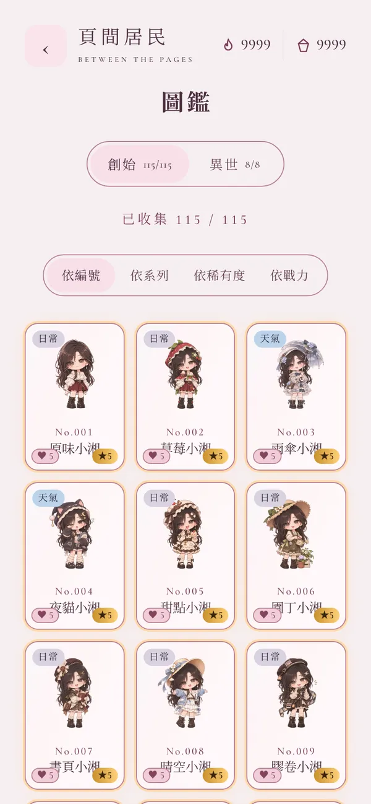
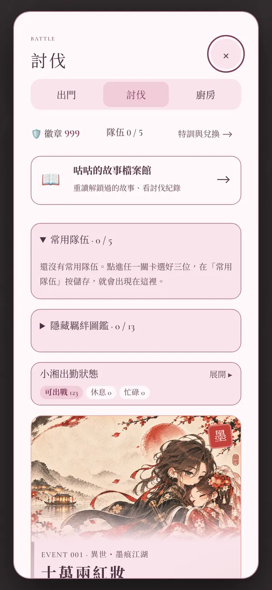
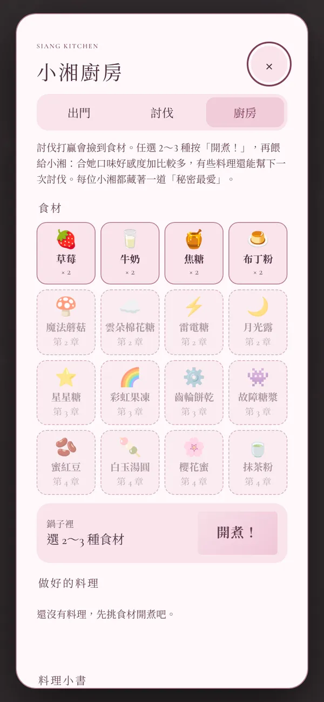
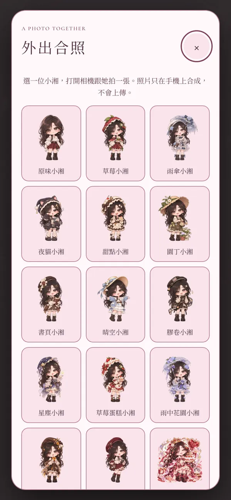
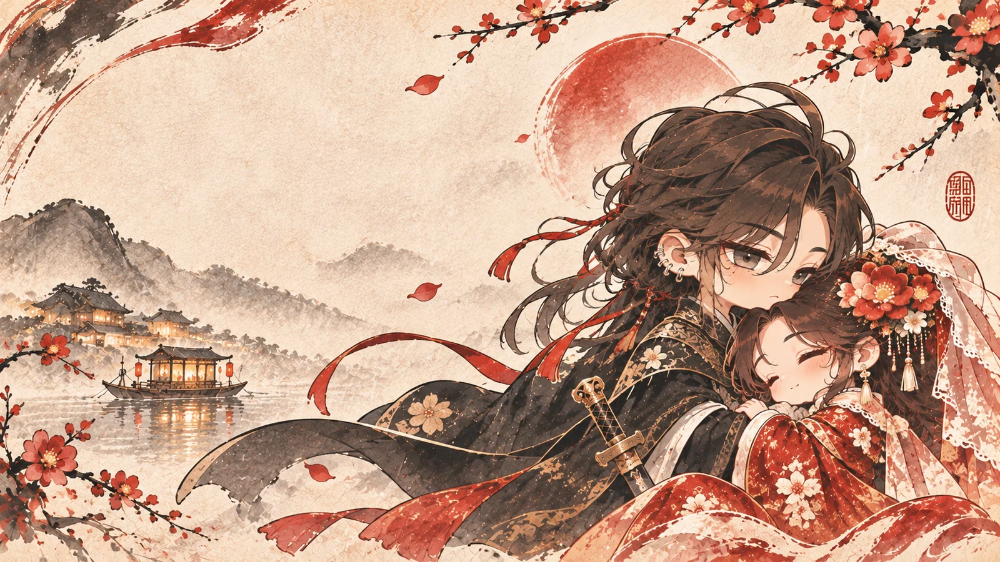

01
孵蛋・收集
替蛋保溫、注入能量，迎接一位位居民。圖鑑會替你記下她們的故事、好感度，還有你們相遇的那一天。

Margin Protocol Presents
BETWEEN THE PAGES
How to live here
不用急著學會所有事。先陪一顆蛋長大，再慢慢把這個家變熱鬧。
替蛋保溫、注入能量，迎接一位位居民。圖鑑會替你記下她們的故事、好感度，還有你們相遇的那一天。

挑三位居民組隊出發，一章一章打下去。好感滿了的組合，還可能觸發隱藏羈絆。

用討伐撿回來的食材下廚。每位居民口味都不一樣，餵著餵著，就會發現她藏起來的秘密最愛。

派她們去便利商店、海邊、夜市，帶回旅行照片；也可以打開相機，和她拍一張只屬於你們的合照。

Worlds
一切從小湘開始。翻過這一頁，門後還有別的故事正在等你。
草莓、雨傘、夜貓、臺灣每個縣市、各種天氣和節日……一百多位小湘，各有各的個性和小故事。
第一扇被推開的門。寡言的墨衣護衛聞止水，和江湖裡各懷心事的人們，正在書頁的另一邊。
Event 001

十關江湖劇情，打下墨玉，到墨玉閣換墨痕蛋，把聞止水和海棠新娘小湘接回家。
▶ 觀看宣傳影片Add to home screen
加到主畫面後就像一般 App，點一下就回到書頁之間，也能收到居民們的消息。
她們，正在書頁之間等你。
開始遊戲